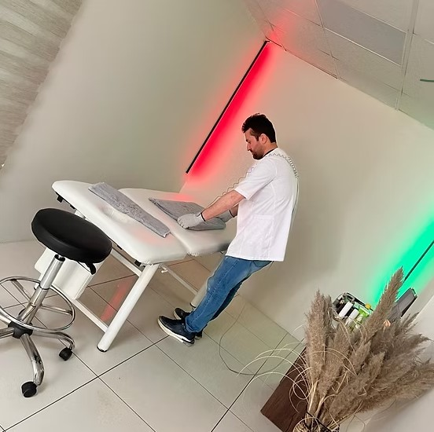

Meridyen, insan vücudunda dolaşım ve sinir sistemleri arasında iletişimi sağlayan kanallara verilen addır. Uzmanlar tarafından yapılan çalışmalarda, meridyenler sayesinde kişinin duyu ve organları ile duygu ve düşünceleri arasında bağlantı sağlandığı tespit edilmiştir. Meridyenler ile beden ve ruh bütünlüğü korunur.
Bu alanda yetkin Uzman Fizyoterapistlerimiz Ufuk Altaş ve Kübra Altaş tarafından öncelikle enerji akışının tıkandığı bölgeler tespit edilir. Meridyen Terapi Cihazı ve özel Gümüş Eldivenler kullanılarak parmak uçlarıyla baskı uygulanır. Bu süreç masaj konforunda gerçekleştiği için hastalarımız ağrı ve sızı hissetmezler; aksine derin bir gevşeme yaşarlar.

"Hastalıkların büyük bölümü enerji tıkanıklığı kaynaklıdır. Ufuk & Kübra Altaş rehberliğinde bu kanalları açarak doğal dengenize kavuşmanızı sağlıyoruz."
VÜCUTTAN ÖDEM ATILIR VE KAN TEMİZLENİR.
KAN DOLAŞIMI DÜZENLENİR, BAĞIŞIKLIK GÜÇLENİR.
DOKULAR YENİLENİR, CİLT SAĞLIĞINA KAVUŞUR.